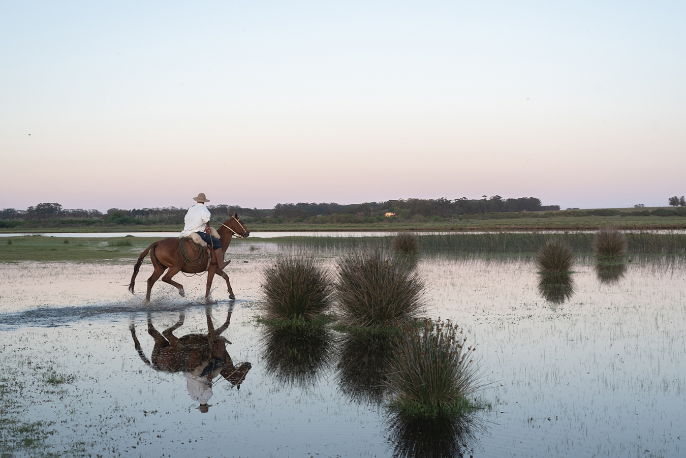

Move
Movement that belongs to the place — trails, water, open air. The kind that makes the body remember it's alive.
A nature-led, culturally grounded longevity experience. Delivered as pleasure, not performance.
Rooted in place, aligned with nature's rhythm, bridging ancestral knowledge with modern science, and calibrated to what your nervous system actually needs — so wellbeing becomes lived, and travels home.
What guides everything→Aquí solo corre el viento.José Ignacio · Uruguay
Five principles are the immutable logic behind every decision. They cannot be traded without losing what makes VIK itself.
Landscape, daylight, and fresh air are the primary wellness tools. Built spaces support nature — they don't replace it.
Rituals guests want to repeat, not rules they escape from. Aspirational, not prescriptive.
Circadian alignment, recovery, and timing. Small consistent practices over occasional extremes.
Light, sound, temperature, texture, scent, and silence curated to reduce stress and invite calm.
Place, food, activities, tradition, and community — so the experience can't be copied anywhere else.
Each one shaped by the terrain it lives in.
Movement that belongs to the place — trails, water, open air. The kind that makes the body remember it's alive.
Food that knows what season it is. Grown close, cooked honestly, eaten slowly.
The art of doing less. Bodywork, silence, and the conditions for sleep that actually restores.
Sunrise, meals, light, rest — following a rhythm older than the schedule you came from.
The conversation with the painting. The gaucho who knows the land. The fire that doesn't need an agenda.
Each phase aligns with circadian biology, supporting restoration without imposing structure. Nothing here has to be attended; the day simply has a shape, and the shape is doing the work.
The body wakes slowly here. Morning light, breath, movement — a quiet conversation with the day before it begins.
When the place invites you outside. The land, the horse, the ocean, the vineyard — peak light for peak living.
The hour when the agenda ends. Bodywork, thermal journey, stillness. The body already knows what comes next.
The light changes. So does everything else. A long table, a slow fire, silence that's welcome.
Five practices that exist here and nowhere else, because they are made of this coast, this collection and these kitchens.
Small practices timed to the body's natural windows — not a schedule, an atmosphere. Breath in the morning light, movement while the day is still cool, stillness when the agenda ends.
Heat, cold, stillness. A sequence designed to reset your nervous system.
The menu changes because the garden does. Meals here have a before and an after.
The collection was never decoration. Slow-looking, guided contemplation, and the kind of beauty that touches something in you — walked with the house curator, at the hour the light is best for the room you are standing in.
Trails, water, open paths — movement that goes somewhere that matters.
Subtly regulating, rhythm-based, place-led. It starts before you land and it does not end at the gate.
Before you land — what you're carrying, what you're looking for, what you'd like to leave behind.
Your first conversation with the team sets the tone — not a form, a direction. Where do you need to go from here?
Each evening, a soft cue for tomorrow. No pressure — just possibility.
What you found here doesn't have to stay here. Practices, recipes, sounds — a thread back to the rhythm.

Every stay at VIK includes a designed daily rhythm — morning rituals, place-led experiences, and evenings calibrated for sleep. Restoration isn't an add-on. It's built into the way the property works.
For those who want to go deeper, private sessions, thermal journeys and multi-day wellness programs are available — quietly, without pressure, shaped around what you actually need.
If you can't remember the last time you slept without an alarm
If you're looking for meaning without the ceremony
If you want to move your body without it feeling like a goal
If you want to share something beautiful with someone you love
guestexperience@vikretreats.com